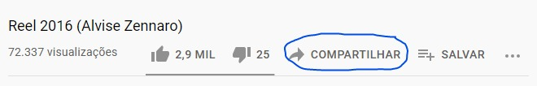

<audio src="audio.mp3/ogg/wav"controls autoplay> </audio>
ou
<audio preload="metadata" controls autoplay loop>
<source src="believe.mp3" type="audio/mpeg">
<source src="believe.ogg" type="audio/ogg">
<source src="believe.wav" type="audio/wav">
<p>Não foi possível carregar o áudio:
<a href="believe.mp3" download="believe.mp3" type="audio/mpeg">Baixar</a></p>
</audio> O segundo exemplo é mais recomendado, pois nem todo navegador é compatível com o formato de áudio que
escolhemos,
ou seja, se ele não suportar mp3, ele tentará carregar o áudio no formato ogg e se não
conseguir, tentará o formato wav.
<video width="800" src="video.mp4/m4v/ogv/webm" controls autoplay>
ou
<video width="800" poster="thumb.png" controls autoplay>
<source src="video.mp4" type="video/mp4">
<source src="video.m4v" type="video/mp4">
<source src="video.webm" type="video/webm">
<source src="video.ogv" type="video/ogg">
<p>Infelizmente o seu navegador não conseguiu carregar o vídeo.</p>
</video>
e se não conseguir carregá-lo tentará o webm, e por aí vai.
recomendável hospedar o vídeo em um outro local, como no Youtube ou no Vimeo, por exemplo.
